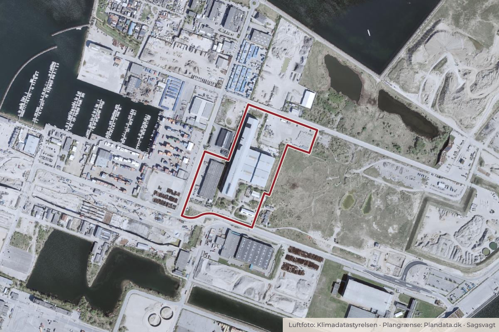

Besluttet 22. juni, Klima-, Miljø- og Teknikudvalget
Dispensationer fra lokalplan til terrænregulering ved Tunnelfabrikken, Nordhavn

Kort: © OpenStreetMap-bidragydere. Plangrænse: Plandata.dk, København Kommune.

Kort fortalt
- Forslaget
- Forvaltningen giver dispensationer fra Lokalplan 613 ”Tunnelfabrikken” til terrænregulering ved Tunnelfabrikken, jf. løsning.
- Hvem
- Klima-, Miljø- og Teknikudvalget
- Hvornår
- Mandag 22. juni 2026
- Status
- Besluttet. Den således ændrede indstilling blev godkendt med 9 stemmer mod 0.Beslutningen er forkortet her. Læs hele beslutningen
- Næste skridt
- Når Klima-, Miljø- og Teknikudvalget har godkendt indstillingen vil forvaltningen give dispensationer fra lokalplanen til den ansøgte terrænregulering. Ejer vil efterfølgende skulle søge byggetilladelse.
9 for0 imod1 undlod
- For
- B Radikale VenstreC Det Konservative FolkepartiF SFI Liberal AllianceV VenstreØ Enhedslisten
- Imod
- Undlod
- Å Alternativet
Er noget forkert her? Skriv til os
Vedtaget 9–0
- For 9
- Imod 0
- Undlod 1
For
Undlod
Afstemninger om ændringsforslag
For
Imod
Læs hele sagen Kommunens egen tekst
Indstilling
Klima-, Miljø- og Teknikforvaltningen indstiller, at Klima-, Miljø- og Teknikudvalget godkender,
• at forvaltningen giver dispensationer fra Lokalplan 613 ”Tunnelfabrikken” til terrænregulering ved Tunnelfabrikken, jf. løsning.
Problemstilling
På udvalgsmødet den 13. april 2026 orienterede forvaltningen Klima-, Miljø- og Teknikudvalget om sagen pga. projektets omfang, som medfører betydelige ændringer af terrænet omkring bygningen, og fordi bygningen opføres på et højere terræn. Sagen blev løftet til politisk behandling. Terrænreguleringen kræver dispensationer fra lokalplan 613 ”Tunnelfabrikken” fra 2022. Grunden ejes af Tunnelfabrikken 1 P/S, og er en del af By og Havn.
Løsning
Tunnelfabrikken er en stor industribygning i Nordhavn, som er opført i 1990’erne for at fremstille tunnelelementer til Øresundstunnelen. Ejeren ønsker at udvikle og transformere ejendommen. I den forbindelse er der ønske om at klimasikre ved terrænregulering, så selve Tunnelfabrikken og grunden hæves med 3,4 m (fra kote 0,8 til 4,2 m DVR90). Terrænet hæves på hele grunden og vil være mellem ca. 1,2-1,7 m højere end det omgivende terræn, hvilket medfører en niveauforskel til naboerne, som håndteres med enten værn (vestlige skel) eller skråning (østligt skel). Ifølge bygningsreglementet skal vand holdes på egen grund, og dette håndteres i byggesagen.
I dag ligger Tunnelfabrikken i en lavning med terrænspring på op til ca. 3 m til det omkringliggende terræn, da landskabet omkring Tunnelfabrikken over årene har ændret sig og er hævet. Se bilag 2 for projektmateriale.
I forbindelse med terrænreguleringen nedrives den eksisterende bygning, og terrænet reguleres til den ønskede højde. Eksisterende fundamenter og terrændæk i beton genanvendes i det nyopførte byggeri. Det er ikke muligt at genbruge eksisterende stålkonstruktioner og facadeplader i ombygningen fra halbyggeri, og ejer ønsker i stedet så vidt muligt, at anvende disse i andre byggerier, som det fremgår af bilag 6, s. 3-5. Det fremgår af ansøgningen, at formålet med terrænreguleringen er langsigtet klimasikring ved bl.a. at sikre Tunnelfabrikken mod skybrud og stormflod samt gøre det muligt at lede overfladevand væk uden brug af pumper. I ansøgningen henvises til By og Havns strukturplan fra 2023, som beskriver, at Ydre Nordhavn kan stormflodssikres bl.a. ved at hæve terrænet. Det er relevant, at analyserne i forundersøgelsen af en stormflodsplan for hovedstadsområdet, som forvaltningen deltog i fra 2022-2025, underbygger den valgte terrænregulering.
Der har tidligere været dialog om et projekt, hvor terræn og bygning ikke hæves, og det er dette projekt, lokalplanen for Tunnelfabrikken er udarbejdet for. Lokalplanen har bl.a. bestemmelser om, at der skal etableres et dige rundt om Tunnelfabrikken. Lokalplanen er fra 2022 før By og Havns strukturplan og forundersøgelsen af en stormflodsplan.
Ejer vurderer, at projektet vil medføre en lavere samlet klimapåvirkning end det tidligere projektgrundlag, som lokalplanen er udarbejdet for. Ifølge By og Havn bevares fundamenter og terrændæk i beton, hvilket reducerer behovet for nye materialer, mens stålkonstruktioner og facadeplader kan genanvendes i andre byggerier. Projektet fokuserer desuden på at reducere klimaaftrykket gennem materialevalg med lav CO₂-belastning, genbrug, hvor det er muligt, samt energiløsninger med en høj andel af vedvarende energi, jf. bilag 6 s. 6.
Desuden vil terrænreguleringen sikre bedre tilgængelighed i området, da niveauforskellene i udearealerne udlignes samt muliggøre bil- og cykelparkeringskælder under bygningen på det bevarede terrændæk, som reducerer projektets samlede klimaaftryk.
Lokalplandispensationer
Tunnelfabrikken er omfattet af Lokalplan 613 ”Tunnelfabrikken”, og ligger i lokalplanens delområde I. Terrænreguleringen kræver minimum 15 dispensationer fra lokalplanen, jf. bilag 3, som vedrører bestemmelser om:
• § 4 Veje, da udformning og forløb på enkelte vejtyper ændres samt overkørsler til parkeringskælder flyttes (tre dispensationer).
• § 5 Bil- og cykelparkering, da bil- og cykelparkering placeres i kælder og ikke på terræn (to dispensationer).
• § 6 Bebyggelsens omfang og placering, da bygningen nedtages og genopføres på den nuværende placering i ny kote uden for lokalplanens byggefelter og linjer for ny bebyggelse (tre dispensationer).
• § 8 Ubebyggede arealer, da der fældes tre bevaringsværdige træer på grund af terrænreguleringen, der terrænreguleres i skel og udformningen på byrum ændres, hvor bl.a. skråninger, ramper, trapper mv. vil have en anden placering på grund af terrænreguleringen. Derudover etableres rampe til parkeringskælder, så kantzonen reduceres og træer samt beplantning plantes i andet byrum (syv dispensationer).
Forvaltningen er umiddelbart indstillet på at dispensere til terrænreguleringen, fordi terrænreguleringen udføres som klimasikring, udligner niveauforskellene i udearealerne og reducerer parkeringsarealer på terræn, da parkering flyttes fra terræn til parkeringskælderen, og dermed frigiver areal på terræn til ophold og grønne arealer.
Forvaltningen stiller krav om, at der skal plantes tre nye træer som erstatning for de tre bevaringsværdige træer, der fældes. De tre bevaringsværdige træer er henholdsvis et birketræ og to piletræer. Et af piletræerne er allerede fjernet/gået til. Antallet af træer og beplantning forbliver det samme, men placering ændres på grund af rampens placering til parkeringskælderen. Ligeledes forbliver antallet af parkeringspladser det samme, men de flyttes til kælderen.
Der er registreret bilag IV-arter i området i form af grønbroget tudse og flagermus. Ejer har redegjort for de nødvendige afværgeforanstaltninger for grønbroget tudse, herunder etablering af nye rastesteder og paddehegn forud for anlægsarbejdet. Det vurderes på den baggrund, at den økologiske funktionalitet for grønbroget tudse kan opretholdes, og at projektet ikke medfører beskadigelse eller ødelæggelse af yngle- eller rasteområder. De gennemførte undersøgelser viser, at bygningerne og arealerne inden for lokalplanområdet ikke udgør egnede yngle- eller rastesteder for flagermus. Forvaltningen vurderer således, at lokalplandispensationerne til det ansøgte kan meddeles.
De krævede dispensationer forholder sig udelukkende til terrænreguleringen og ikke til indretning og transformation af selve Tunnelfabrikken. Transformation af selve bygningen vil formentligt kræve flere lokalplandispensationer. Forvaltningen har ikke modtaget ansøgning om dette.
Naboorientering
Dispensationerne har været i naboorientering fra den 21. april – 12. maj 2026. Der er indkommet to høringssvar fra Metroselskabet og Vejdirektoratet, jf. bilag 4. Lokaludvalget har ikke sendt høringssvar. Forvaltningens bemærkninger fremgår af bilag 5. By og Havns bemærkninger fremgår af bilag 6.
Trafikstyrelsen har ingen bemærkninger. Metroselskabet påpeger i høringssvaret hovedsageligt, at der kan være risiko for oversvømmelser i de nærliggende områder, hvis terrænet hæves, at regnvand skal håndteres på egen matrikel, og det kan have negative konsekvenser for metroforlængelsen til Ydre Nordhavn, hvis koten for hele Ydre Nordhavn generelt hæves. Metroselskabet ser bl.a. positivt på områdets transformation og placering af cykel- og bilparkering i kælder.
Forvaltningens bemærkninger
Forvaltningen bemærker, at projektet ikke handler om at hæve hele koten og terræn for Ydre Nordhavn, og at det konkrete projekt ikke påfører vandstigninger. Ifølge bygningsreglementet skal vand holdes på egen grund, og dette håndteres i byggesagen.
Politisk handlerum
Klima-, Miljø- og Teknikudvalget kan beslutte, at forvaltningen ikke skal give dispensationer fra lokalplanen. Det vil betyde, at projektet ikke kan gennemføres i den ansøgte form. Dette vil også være udfaldet, såfremt indstillingen ikke godkendes.
Økonomi
Denne indstilling har ikke i sig selv økonomiske konsekvenser for Københavns Kommune.
Videre proces
Når Klima-, Miljø- og Teknikudvalget har godkendt indstillingen vil forvaltningen give dispensationer fra lokalplanen til den ansøgte terrænregulering. Ejer vil efterfølgende skulle søge byggetilladelse.
Beslutning
Alternativet stillede følgende ændringsforslag som erstatning for 1. at-punkt:
”at sagen sendes tilbage til forvaltningen med henblik på at reducere parkeringsbehovet."
Ændringsforslaget blev forkastet med 1 stemme mod 9. Ingen undlod at stemme.
For stemte: Å
Imod stemte: B, C, F, I, V, Ø
Den således ændrede indstilling blev godkendt med 9 stemmer mod 0. 1 undlod at stemme.
For stemte: B, C, F, I, V, Ø
Undlod at stemme: Å
Radikale Venstre afgav følgende protokolbemærkning:
”Radikale Venstre ønsker, at der tages hensyn til allergivenlighed og hjemmehørende arter ved (erstatnings-)træer.”
Alternativet afgav følgende protokolbemærkning:
”Alternativet støtter behovet for klimasikring af Tunnelfabrikken og ser positivt på, at projektet kan reducere parkering på terræn, forbedre tilgængeligheden og bidrage til et levende samlingspunkt i Nordhavn. Alternativet finder det uholdbart, hvis et parkeringskrav på 403 pladser, fastlagt efter tidligere forudsætninger om stationsnærhed og byudvikling, nu omsættes til en permanent og CO2-tung parkeringskælder. Parkeringsbehovet bør reduceres gennem det nødvendige plangrundlag, før der meddeles dispensationer til parkeringskælder og rampeanlæg.”
Bilag
- Bilag 1 Overblik over politisk behandling
- Bilag 2 Projektmateriale
- Bilag 3 Dispensationsoversigt
- Bilag 4 Høringssvar
- Bilag 5 Forvaltningens bemærkninger til høringssvar
- Bilag 6 Bemærkninger fra By og Havn
Kilde: Københavns Kommune, Klima-, Miljø- og Teknikudvalget, referat fra mødet mandag 22. juni 2026, punkt 11. Læs den originale sag hos kommunen.
Steder i sagen: Nordhavn